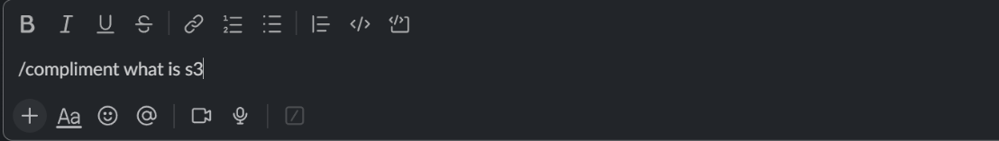
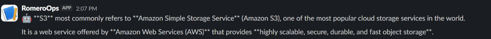

Node.js
Receives the command and coordinates the round trip.
A question in Slack. A prompt to the cloud. An AI answer right where the conversation happens.
I built and integrated a Slack-based assistant that connects a Node.js application to Amazon Bedrock, then returns the generated response directly to Slack.
The application connects a familiar chat interface to a generative AI service. Watch the request travel out and the answer return.
User submits a command
Node.js application
Generates the response
User submits a slash command in Slack.
RomeroOps-AI receives the request.
The Node.js application sends the prompt to Amazon Bedrock.
Amazon Bedrock generates the response.
RomeroOps-AI returns the response to Slack.
Actual screenshots from the successful Slack test, cropped to focus on the command and the returned answer.
/compliment what is s3

Amazon S3 is explained directly in Slack.

Slack does not retain the slash command as an ordinary visible channel message after submission. The test is therefore presented as before-and-after evidence. Select either image to inspect it.
Receives the command and coordinates the round trip.
Brings the request and the answer into the Slack workflow.
Processes the prompt and generates a response.
Connects the Node.js application to AWS services.
Hosts the project source and this static portfolio page.
Keep credentials separate from application code.
Credentials and configuration values are stored separately in .env and excluded from the public repository. node_modules is also excluded.
This portfolio contains static presentation files and proof screenshots. It does not connect to the bot or provide access to the Slack workspace, AWS account, Amazon Bedrock credentials or backend.
STATIC WEBSITE ONLY · NO LIVE BOT ACCESSSee the application behind this tested integration.